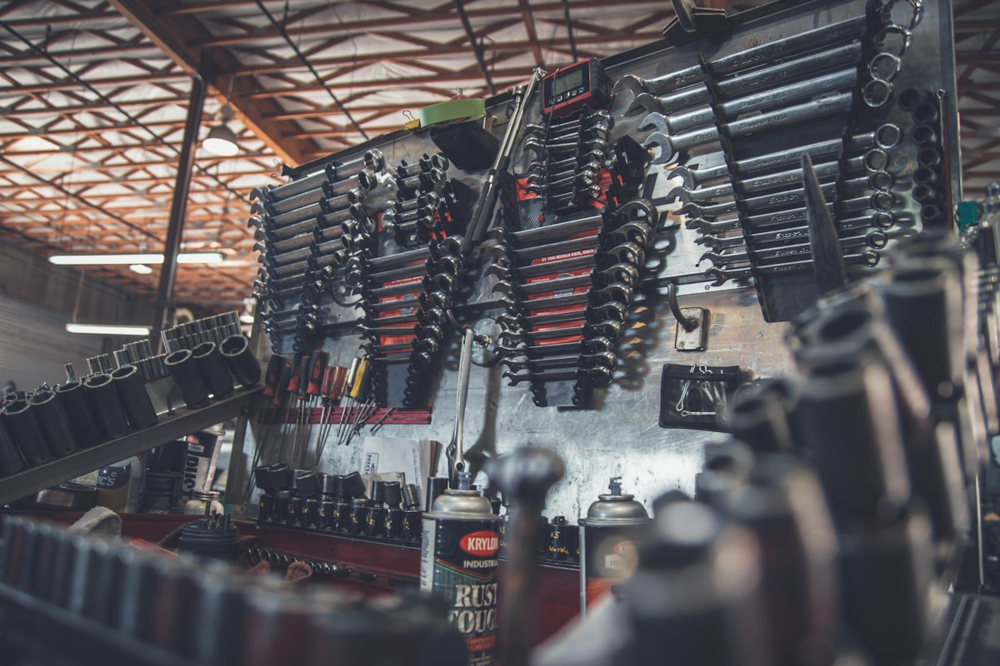

2冲程vs4冲程：动力系统选型指南

一、两种发动机的工作原理
汽油园林机械的发动机分为两大类：2冲程（2-Stroke）和4冲程（4-Stroke）。"冲程"指活塞在气缸内完成一个行程。2冲程发动机曲轴每旋转一圈完成一个工作循环（进气-压缩-做功-排气在2个行程内完成），4冲程发动机则需要两圈（四个行程各占一个冲程）。这一根本区别决定了两者在性能、重量、排放和使用场景上的巨大差异。
二、核心参数全面对比
| 对比维度 | 2冲程发动机 | 4冲程发动机 |
|---|---|---|
| 功率重量比 | 高（约0.8-1.2 hp/kg） | 较低（约0.5-0.8 hp/kg） |
| 同排量功率输出 | 较高（每循环做功一次） | 较低（每两圈做功一次） |
| 扭矩特性 | 峰值在高速区（6000-8000rpm） | 低中速扭矩更充沛（3000-5000rpm） |
| 燃油 | 汽油+2T机油混合（50:1或40:1） | 纯汽油（机油在曲轴箱内独立润滑） |
| 燃油消耗 | 较高（部分未燃混合气随排气流失） | 较低（燃烧更充分，省油15%-25%） |
| 排放水平 | HC+CO排放较高 | 排放显著更低，更易满足EPA/EU Stage V |
| 噪音 | 95-110 dB(A) | 85-100 dB(A)，通常低5-10dB |
| 振动 | 较大（爆炸频率高） | 较小（运转更平稳） |
| 重量 | 轻（结构简单，零部件少） | 重（含气门机构、油底壳等） |
| 维护复杂度 | 低（无气门、无独立润滑系统） | 中高（需换机油、调气门间隙） |
| 使用寿命 | 约500-1,000小时（大修间隔） | 约1,000-2,000小时（大修间隔） |
| 工作姿态 | 任意角度（无油底壳限制） | 有角度限制（部分机型需保持油面） |
| 启动难度 | 较易（压缩比低） | 较难（压缩比高，需更大拉力） |
三、在园林机械中的适用场景
3.1 割灌机
| 使用场景 | 推荐发动机 | 原因 |
|---|---|---|
| 家庭庭院（< 200㎡） | 2冲程 22-26cc | 轻便便宜，维护简单 |
| 中型农场/园艺（200-800㎡） | 2冲程 30-43cc 或 4冲程 30-35cc | 大排量2冲程或中小排量4冲程均可 |
| 商业市政（全天候作业） | 4冲程 35-50cc | 低排放、低噪音、长寿命、省油 |
| 山坡/复杂地形 | 2冲程 33-43cc | 任意角度工作、轻便易操作 |
3.2 油锯
油锯领域2冲程占绝对主导地位（95%以上市场份额）。原因：
- 油锯需要极高的功率重量比，4冲程太重不适合手持长时间作业。
- 油锯经常以各种角度甚至倒置使用，2冲程无油底壳不受限。
- 4冲程主要存在于大型伐木油锯（>70cc）的少数高端机型中。
3.3 吹风机
| 使用场景 | 推荐发动机 | 原因 |
|---|---|---|
| 家庭庭院、车道清扫 | 2冲程 25-30cc | 轻便，低速即可完成作业 |
| 商业大面积场地 | 4冲程 50-75cc | 长时间运行省油、噪音合规 |
| 市政环卫（噪音敏感区） | 4冲程（必须） | 欧盟/日本城市噪音法规要求 |
四、按市场区域推荐
| 市场 | 2冲程需求 | 4冲程需求 | 趋势 |
|---|---|---|---|
| 欧洲 | 下降中 | 快速上升 | EU Stage V排放法规驱动4冲程替代 |
| 北美 | 主流 | 增长中 | CARB法规趋严，但用户偏好大功率2冲程 |
| 东南亚 | 绝对主流 | 几乎为零 | 价格敏感，2冲程结构简单维修方便 |
| 中东/非洲 | 绝对主流 | 极少 | 环境宽松，性价比优先 |
| 日本 | 下降中 | 主流 | 噪音法规极严，4冲程已成标准配置 |
五、真实拥有成本对比（5年周期）
以下以商业用户每天使用4小时、年工作200天为例：
| 成本项目 | 2冲程（43cc割灌机） | 4冲程（35cc割灌机） |
|---|---|---|
| 设备购买成本 | 约$180-250 | 约$280-380 |
| 年燃油费用 | 约$520 | 约$400 |
| 年机油费用 | 约$60（混合油） | 约$25（独立机油） |
| 年维护费用 | 约$80 | 约$120 |
| 5年总拥有成本 | $3,550-3,620 | $3,305-3,405 |
| 大修周期 | 约2-3年 | 约4-5年 |
尽管4冲程初始购买价格更高，但5年周期内燃油节省和更长的大修间隔使得总拥有成本低于2冲程。对于商业用户，推荐优先考虑4冲程。
六、华悦园林产品布局
华悦园林针对不同市场需求，提供完善的2冲程和4冲程产品线：
- 2冲程系列：覆盖25cc-63cc排量区间，主打割灌机、油锯和中小型吹风机。结构成熟、零配件充裕、维修网络完善，适合价格敏感市场和专业林业应用。
- 4冲程系列：覆盖35cc-75cc排量区间，主打大型吹风机和中型割灌机。低排放、低噪音、长寿命，主攻欧洲和日本市场。
选型建议：如果你面向欧洲/日本市场——4冲程优先；面向东南亚/中东/非洲——2冲程为主；面向北美——2冲程为主、4冲程为辅。不确定如何选择？联系我们的外贸团队，我们将根据你的目标市场提供专业选型方案。